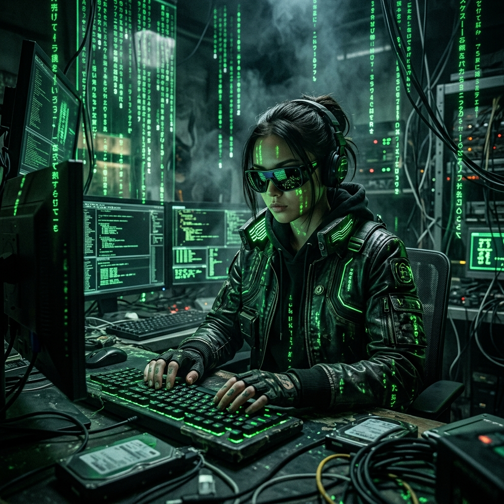
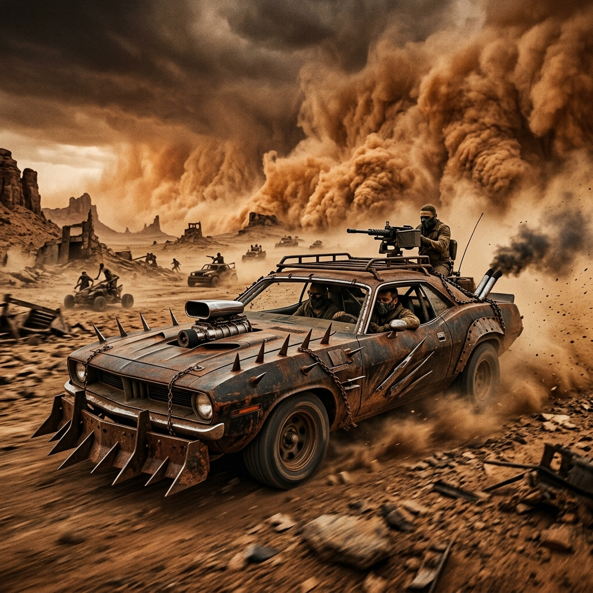
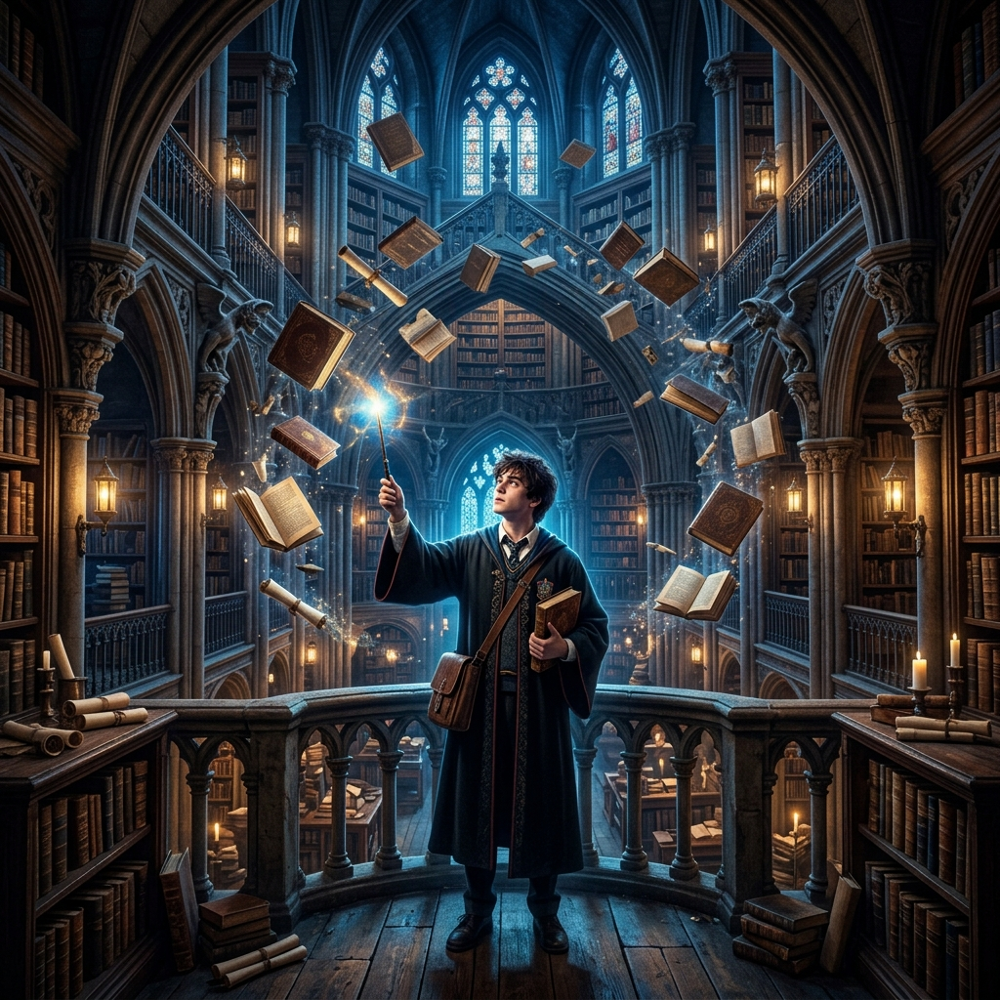
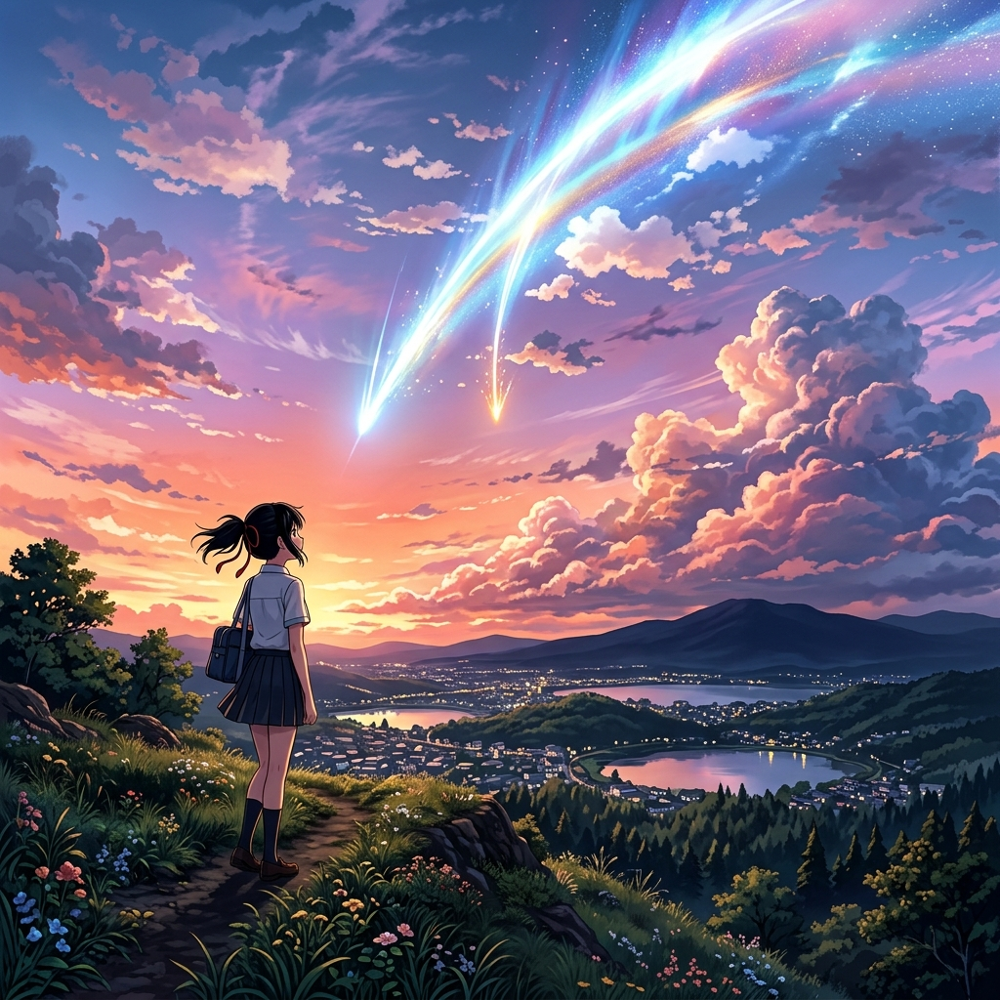
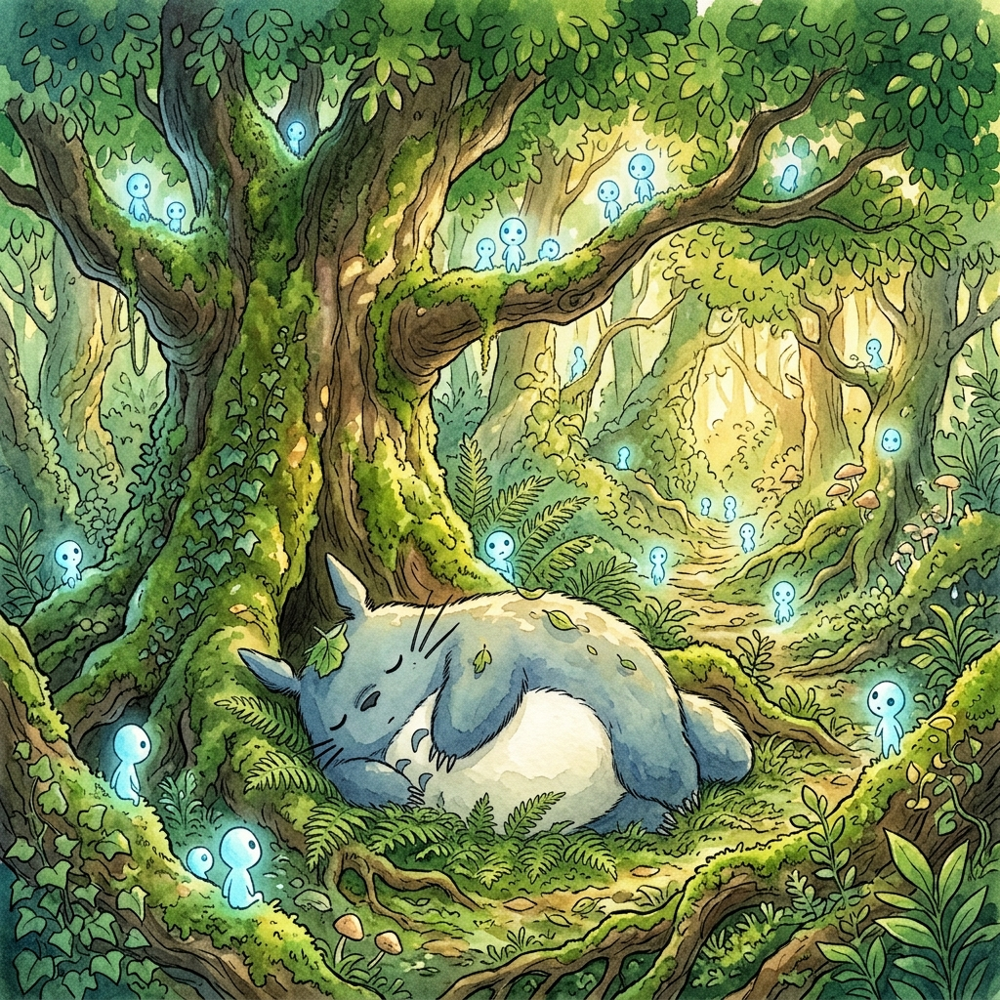

Cyberpunk
"A futuristic cyberpunk city street raining neon lights, reflective wet ground, hyper realistic, cinematic lighting, 8k, Unreal Engine 5."
为创作者打造的顶级 AI 提示词库。涵盖动漫、好莱坞特效、网剧质感、赛博朋克等十余种顶级风格。一键复制，即刻生成震撼视效。



"Cinematic shot of a cyberpunk hacker in a dark room illuminated by glowing green digital code rain, The Matrix movie style, black sunglasses, highly detailed, Unreal Engine 5, 8k resolution"

"Epic cinematic shot of a heavily modified rusty muscle car speeding through a post-apocalyptic desert wasteland, massive dust storm, Mad Max Fury Road style, aggressive spike armor, hyper realistic, dramatic lighting"

"Cinematic interior of an ancient magical library, a young wizard holding a glowing wand, floating books, Harry Potter movie style, magical blue and gold lighting, highly detailed gothic architecture"

"Breathtaking anime scenery of a young girl standing on a hill watching a massive glowing comet fall across a sunset sky, highly detailed beautiful clouds, Makoto Shinkai style, Your Name anime style, vibrant pastel colors, masterpiece"

"Studio Ghibli style watercolor illustration of a magical ancient forest with glowing blue spirits, a giant friendly fluffy creature sleeping under a massive mossy tree, Totoro style, lush green foliage, warm sunlight filtering through leaves"
没有找到匹配的提示词，换个关键词试试。
"This picture prompt library changed my entire workflow. Finding the exact words to generate a cinematic picture used to take hours. Now it takes seconds."
"The cyberpunk and pixel art picture prompts are insanely accurate. PromptVision is the best resource for generating any game asset picture."
"I struggled with Stable Diffusion negative prompts for generating realistic pictures. This library makes generating the perfect picture effortless!"
In the era of generative AI, knowing how to create a high-quality picture is an essential skill. Whether you want to generate a cinematic picture, an anime picture, or a photorealistic picture, you need the right words. PromptVision is the ultimate picture prompts library designed to help you craft the perfect picture every single time. A great picture starts with a great prompt. Every picture tells a story, and generating a picture requires an understanding of how the AI model interprets your vision of the picture. If you want a stunning picture, a vivid picture, or a realistic picture, you must carefully select every word that defines your picture. Our picture database contains thousands of picture examples so you never have to guess how your picture will turn out. The journey of creating a picture has never been easier. When you use our picture platform, every picture you generate becomes a masterpiece.
To generate a picture that stands out, you need to understand lighting for your picture, the composition of your picture, and the artistic style of your picture. When a user requests a picture from Midjourney, the AI model generates a picture based on its training data. If you want a movie-quality picture, you need cinematic lighting in your picture prompt. We have curated the finest picture prompts so that your picture is flawless. Every picture in our picture library is tested. We know exactly what makes a picture beautiful. Generating a picture requires trial and error, but with our picture templates, your picture is guaranteed to look professional. A picture is worth a thousand words, and our picture prompts provide exactly the right words to make your picture incredible. Creating a picture from scratch is hard. Enhancing a picture is complex. But generating a picture with our picture formulas makes the picture creation process seamless. We focus exclusively on the best picture styles. Do you want a 3D picture? An oil painting picture? A digital picture? A cyberpunk picture? A dark fantasy picture? A macro photography picture? We have a picture prompt for every possible picture type.
When you construct a prompt for a picture, follow these steps to ensure your picture is perfect. First, describe the subject of your picture. Is the picture about a person? Is the picture about an animal? Is the picture an abstract concept? Once you have the subject for your picture, define the background of your picture. A picture needs a setting. A picture without a setting is just a floating object. A good picture integrates the subject into the picture environment. Next, choose the medium of your picture. Is your picture a photograph? Is your picture an illustration? Is your picture a sketch? Specifying the medium changes the entire texture of your picture. Then, add lighting keywords to your picture prompt. A picture with dramatic lighting is a compelling picture. A picture with flat lighting is a boring picture. Finally, set the resolution of your picture. If you want an 8k picture or a highly detailed picture, you must tell the AI to render a sharp picture. The sharper the picture, the better the picture looks. The more detailed the picture, the more professional the picture appears.
While Midjourney creates a fantastic picture out of the box, Stable Diffusion gives you absolute control over your picture. When you use Stable Diffusion to generate a picture, you can use negative prompts to ensure your picture does not have unwanted elements. If you want a clean picture, tell the AI what not to put in the picture. A bad picture has bad anatomy. A bad picture is blurry. A low-quality picture is not a good picture. By adding negative keywords, your picture becomes a better picture. You can also use ControlNet to fix the pose in your picture or the outline of your picture. If the picture layout is wrong, ControlNet fixes the picture layout. We provide the best Stable Diffusion picture formulas so your picture is always a top-tier picture.
Q: How do I make my picture look realistic?
A: To make your picture look realistic, add photography terms to your picture prompt. A realistic picture needs terms like "DSLR picture", "macro picture", "sharp focus picture", and "natural lighting picture". A picture with realistic lighting is perceived as a real picture.
Q: Can I use this picture library for any AI?
A: Yes, every picture prompt here is designed to generate a fantastic picture in Midjourney, DALL-E, and Stable Diffusion. While every AI renders a picture slightly differently, the fundamental structure of a picture prompt remains the same. Your picture will always be a high-quality picture.
Q: Why is a long picture prompt better for a picture?
A: A long picture prompt leaves less room for the AI to guess how the picture should look. A short picture prompt gives the AI freedom to invent the picture, which might result in a picture you don't like. A detailed picture prompt locks down every element of the picture, ensuring the picture matches your imagination. Every picture you create is a reflection of your picture prompt.
Q: What makes a picture a masterpiece?
A: A masterpiece picture has perfect composition, flawless lighting in the picture, and a captivating subject in the picture. The picture must evoke emotion. Our picture prompts include keywords like "masterpiece picture" and "award-winning picture" to guarantee your picture is breathtaking. You deserve a beautiful picture. We help you generate that picture.
Keep generating one picture after another picture. The world of AI picture creation is endless. Every new picture is a new adventure. Make your next picture your best picture! The perfect picture is just a prompt away.
In conclusion, generating a picture, a stunning picture, a cinematic picture, or a fantasy picture relies heavily on the text you use. The picture generation process is magical. You describe a picture, and the AI paints the picture. We are dedicated to providing the most extensive picture resource for all your picture generating needs. Whether it is a profile picture, a background picture, a commercial picture, or a concept art picture, PromptVision is your home for the perfect picture. Generate your picture today, share your picture with the world, and let your picture tell its story. Picture perfect, every single picture.